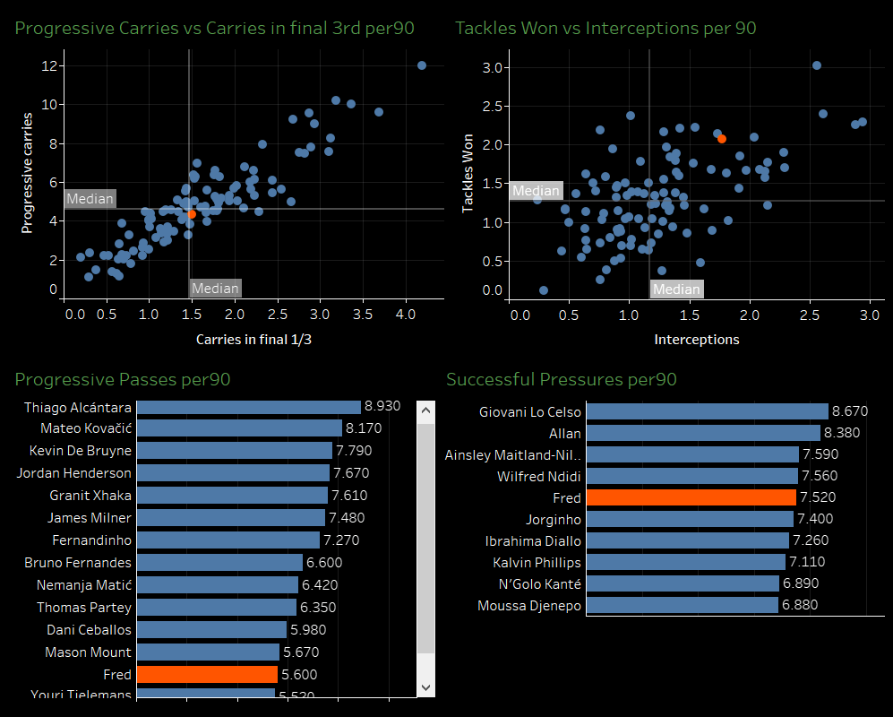

Player Analysis: Fred
Is Fred (a midfielder that plays for Manchester United) a number 6 (centre midfielder) or a number 8 (defensive midfielder)? I have been confused about this question for a long time so I did some analysis to find out what the data suggests. Below is a player dashboard comprising of four images. Fred has been highlighted in the colour orange.
The top left image is a scatter plot of progessive carries vs carries in the final third of the pitch. Here Fred is pretty mediocre with him in the 50th percentile. The best in the group is Bernado Silva who has 12 progressions and 4.19 carries.
The top right image is a scatter plot of tackles won vs intercetions. Fred lies on the 70th percentile with only a few players performing better than him. The best player in this group is Wilfrid Ndidi who has 3.02 tackles won and 2.56 interceptions.
The bottom left image is a bar graph of all the players who have played the most progessive passes. Fred is 13th with 5.6 passes while Thiago Alcantara is best with 8.92 progressive passes.
The bottom right image is a bar graph of players who have performed successful pressures. Here Fred is 5th with 7.52 successful pressures while the surprise of this analysis is Giovani Lo Celso who was best in the league with 8.67 successful pressures.
So after looking at his offensive, defensive and possession stats we can say that Fred is not a very good number 6 but a decent number 8. His qualities a best defined in a player known as Segundo Volante, a player who plays in a midfield double pivot along side a deep-lying playmaker. While the deep-lying playmaker dictates the tempo of the game, the Segundo Volante imposes that tempo on the opposition.
Some terms like progressive carries, progressive passes and successful pressures could be unknown to non-football people. I could not explain every term in this post but would be happy to explain them if needed. All these stats have been taken for players who have played atleast 900 minutes in the premier league. The per 90 metric mentioned means that the stats have been divided by 90 as that gives an average value. The stats have been taken from Statsbomb via Fbref.com.